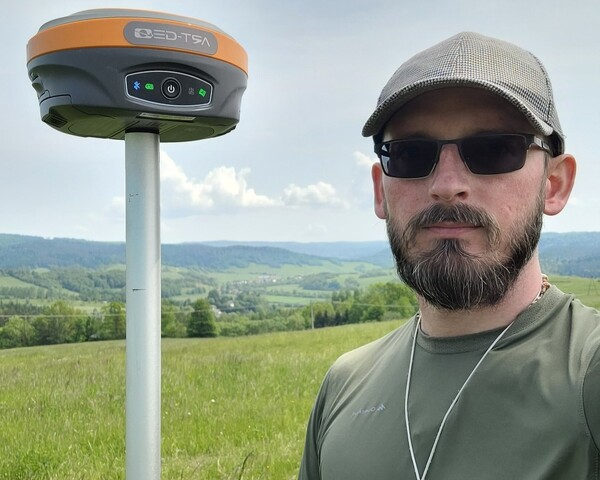

Stała obsługa geodezyjna dla wykonawców sieci i przyłączy do budynków
Budujesz przyłącza wodociągowe, kanalizacyjne, gazowe, energetyczne lub światłowodowe? Szukasz geodety, który nie blokuje odbiorów i wchodzi w teren na telefon? Zapewniamy bieżącą obsługę firm wykonawczych i instalacyjnych w powiatach brzozowskim, sanockim, leskim i sąsiednich.

Zakres prac dla instalatorów i wykonawców sieci:
Od mapy do celów projektowych, przez wytyczenie trasy i pomiar na otwartym wykopie, aż po klauzulowaną inwentaryzację do odbioru.
Mapy do celów projektowych pod rozbudowę sieci
Opracowujemy numeryczne mapy do celów projektowych (DWG/DXF/GML) pod nowe odcinki sieci rozdzielczej, przyłącza domowe oraz modernizację infrastruktury gminnej i przemysłowej.
Tyczenie tras sieci i przyłączy przed wejściem koparki
Precyzyjnie wyznaczamy przebieg sieci wod-kan, gazowych, energetycznych (eNN/eSN) oraz telekomunikacyjnych zgodnie z uzgodnionym projektem ZUD / naradą koordynacyjną. Oznaczamy załamania trasy, kolizje z istniejącym uzbrojeniem oraz rzędne wysokościowe.
Pomiary na otwartym wykopie (bez wstrzymywania prac)
Rozumiemy koszt przestoju brygady ziemnej i koparki. Reagujemy natychmiastowo na telefon wykonawcy – wykonujemy domiar ułożonego przewodu, muf, zasuw i trójników na otwartym wykopie, aby ekipa mogła od razu przystąpić do zasypania.
Szybka geodezyjna inwentaryzacja powykonawcza
Sporządzamy operaty powykonawcze przyłączy i studzienek (kanalizacyjnych, wodomierzowych, teletechnicznych) niezbędne do protokołu odbioru w zakładzie wodociągowym, gazowni (PSG), energetyce (PGE) oraz w PINB.
Co zyskuje Twoja firma przy stałej współpracy?
Budujemy długofalowe relacje z firmami instalacyjnymi i wykonawczymi z całego Podkarpacia.
Priorytetowe terminy
Dla stałych partnerów gwarantujemy pomiar otwartego wykopu w ekspresowym trybie – jedziemy na budowę wtedy, gdy wykop jest gotowy, eliminując przestoje sprzętu.
Rozliczenia dopasowane do rytmu zleceń
Przejrzyste stawki ryczałtowe za przyłącze lub odcinek sieci. Możliwość zbiorczego rozliczania pakietów przyłączy realizowanych na terenie danej gminy lub kontraktu.
Błyskawiczny obieg dokumentacji w ODGiK
Obsługujemy ośrodki w Brzozowie, Sanoku, Lesku, Ustrzykach Dolnych i Krośnie – wieloletnia znajomość lokalnych procedur gwarantuje szybkie klauzulowanie map do odbiorów i szybsze wystawienie faktury końcowej inwestorowi.